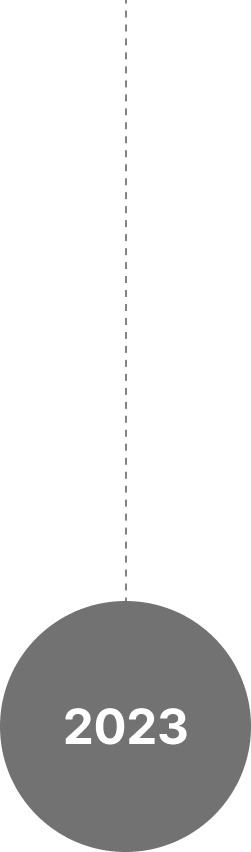

1999
December
초등학교 6학년부터 회화를 시작한 저는 당연히 작가가 될 것이라는 꿈을 가지고 예고를 진학하게 됩니다.
하지만 획일화된 그림과 재능에 한계를 느끼고 앞으로의 진로에 대해 다시 생각해보게 됩니다.
평소 앱을 사용하면서 아 이게 고쳐지면 좋을텐데, 이 앱은 왜이렇게 불편하지?같은 의문을 자주 느낀 저는 이것이 UIUX라는 분야라는 것을 알게되었고
계원예술대학교 디지털미디어디자인학과를 알게 됩니다.
당시 재학생에게 면접과외를 받으면서 생전 처음 접하는 입시제도인 면접 100%에 불안감이 컸지만 면접전형에서 신입생 우수로 입학하는 좋은 성과를 이루게 됩니다.
하지만 학과에 들어오고 나서 인생의 절반을 도화지에 그림만 그렸던 저에게 컴퓨터와 다양한 툴을 활용해 과제를 수행하는 것은 매우 큰 어려움이였습니다.
1학년 1학기 전공 성적은 그럭저럭받았지만 만족스러움과는 한참 뒤떨어진 점수였고, 방학동안 다양한 레퍼런스들과 툴을 만져보면서 1학년 2학기에는 꽤나 만족스러운 성적을 받을
수
있었습니다.
1학년 2학기때 접한 프로그래밍은 저에게 새로운 재미로 다가왔습니다. 매우 직관적이고 배운만큼 보이는 코드의 매력에 빠져 세부전공을 프로그래밍으로 선택하게 되었고, 이
선택을 통해 좋은 사람들을
만나고, 다양한 배움을 얻을 수 있었습니다.
이제는 전공심화 과정을 통해서 원래 제가 이 학과에 들어온 목적이였던 UIUX에 대해 배우고자 합니다. 프로젝트 스튜디오와 졸업 전시 준비를 통해 기획과 디자인의 작업
프로세스에 대해서도
알게되었고 현재 저의 개발 지식과 이 두가지를 접목시키면
저 스스로에게 큰 시너지를 일으킬 것이라고 생각합니다. 전공심화 과정을 거친 후에는 대학원에 진학해 UIUX에 대해 더 깊이 연구하고 논문을 투고하고 싶다는 꿈이 있습니다.